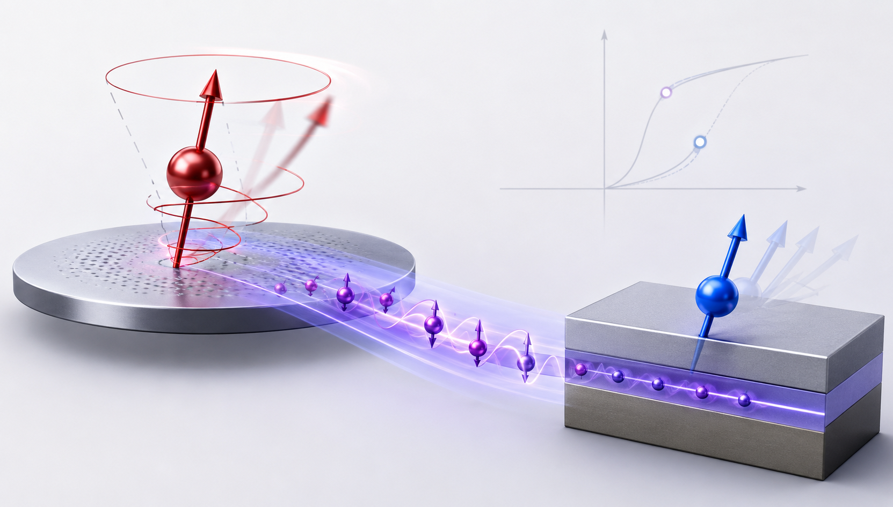
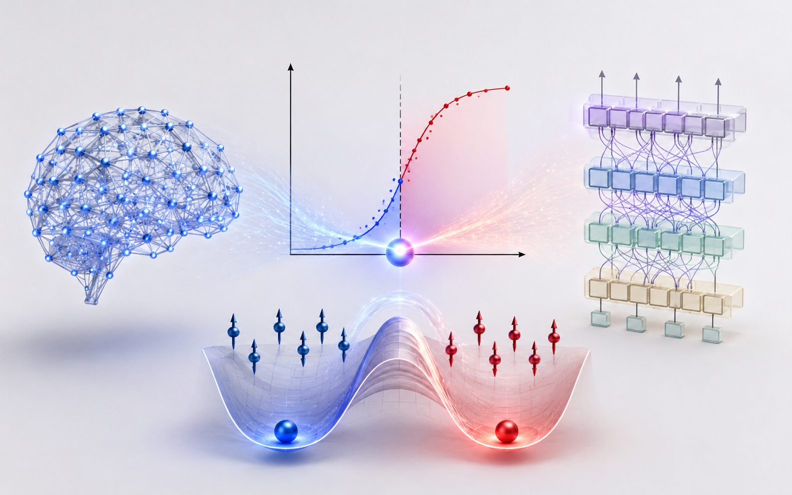

研究方向 1. 自旋动力学分析
围绕磁性系统中的动力学与磁子输运问题开展理论研究，重点关注磁场和自旋力矩驱动的磁矩进动，章动和翻转行为以及磁子输运机制。通过构建自旋动力学与量子输运理论模型，探索磁矩动力学和磁子输运之间的内在联系，发展复杂磁性系统临界点预测方法，并研究其在新型磁存储和磁传感器件中的潜在应用。

研究方向 2. 神经网络的涌现现象
关注复杂智能系统中的涌现现象及其物理机制，研究神经网络性能突变与非线性相变之间的内在联系。借助序参量、临界指数等统计物理方法，分析Hopfield网络和Transformer等模型在规模扩展过程中的临界行为与能力涌现规律；结合非线性磁子系统中的双稳态和相变动力学，探索智能涌现的普适物理机制。相关研究有助于深化对大模型涌现能力形成机理的理解，并为新型类脑计算架构的设计提供理论依据。